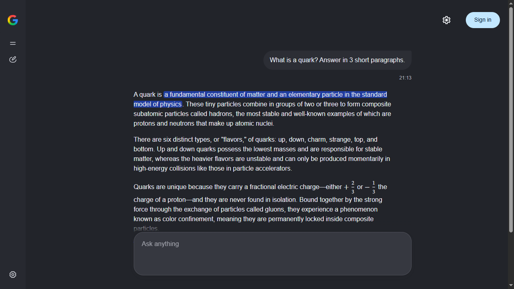

Gemini for Windows*
Google AI Mode in its own clean window. Open source, for Windows 10 and 11.
One file, Gemini.exe · Windows 10/11 · uses Microsoft Edge, already built into Windows · MIT license

Why this app
Its own window
No browser tabs or address bar. AI Mode opens like any Windows program, with a Desktop shortcut and its own taskbar icon.
Nothing extra
No Images / Videos / News tabs, no sources column, no extra buttons. Just the answer, centered.
Voice input with commands
Dictate with Ctrl+Space in 50+ languages. Say "send" at the end and the question goes out.
One file
Download a single Gemini.exe, no installer or zip. Settings and your login stay in the app's own folder; your regular browser isn't touched.
Install
- Download
Gemini.exe: one file, nothing to unzip. - Run it. A Gemini shortcut appears on your Desktop and in the Start menu.
- Ask anything. Sign in to Google if you want to keep your chat history.
If Windows says "Windows protected your PC", click "More info" → "Run anyway". The exe isn't signed with a paid certificate; see Transparency below.
Shortcuts
Ctrl+Space: start or stop dictation. Say "send" at the end to send, "clear" to clear the input.Ctrl+,: settings (interface language and dictation language).Esccloses them.
Transparency
- All code is open: the launcher (
Gemini.cs, about 120 lines) and a small Edge extension. Gemini.exeis built by GitHub Actions from the public source, not on the author's computer. Build logs are public.- Every release has SHA-256 checksums and a GitHub provenance attestation:
gh attestation verify Gemini.exe -R ishimuraxxx-ai/gemini-1.0.1 - No telemetry. The app talks only to Google.
FAQ
What exactly does it open?
Google AI Mode (google.com/search?udm=50), the AI chat in Google Search powered by Gemini. The app shows it in its own window and hides everything except the chat.
Do I need a Google account?
No. AI Mode answers without signing in. Sign in to keep your chat history.
Is it safe?
All code is open, and the exe is built publicly by GitHub Actions with checksums and a provenance attestation. The app collects no data and keeps your login only in its own folder.
AI Mode says it isn't available
AI Mode isn't offered in every country. Use a VPN with a server in a country where it is available.
Does it work on macOS or Linux?
No, only Windows 10/11 with Microsoft Edge.